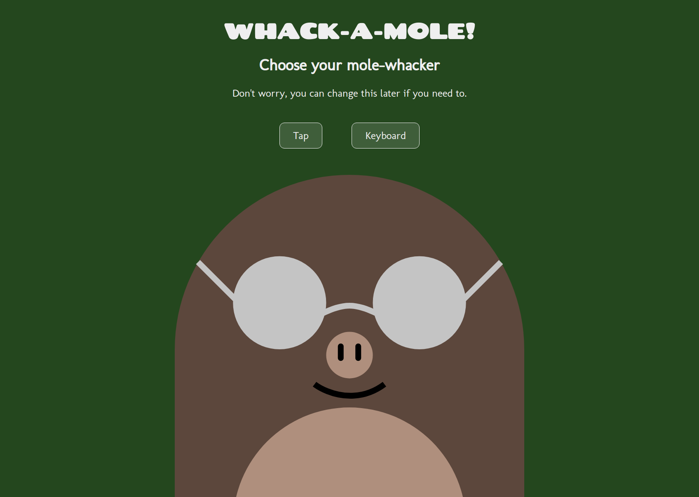

charlie dodds
web developer
london
about
bio
I'm a web developer from London.
I taught myself for about 6 months before being offered a free place on a _nology bootcamp to cement my technical skills and develop collaborative, professional skills.
Off-screen I love skiing and snowboarding.
skills
- problem solving
- independence
- communication
- leadership
- teamwork
- resilience
tools


work
college thrifts
This website was for a client as part of the _nology bootcamp.
In a group of 9, we built an MVP whilst pair programming in an Agile environment using React with a Firebase backend.
You can see the live demo below.
steam sales calculator
This website was built as part of The Odin Project.
The task was to use React Router to display information from an API and be able to add items to a basket.
You can see the code or live demo below.
whack-a-mole
This game was built as part of the _nology bootcamp.
I had one week of afternoons to design and build a functional JavaScript game.
You can see the code or live demo below.
todo list
This Todo List was built as part of The Odin Project.
The task was to dynamically create Project and Todo objects and save data to local storage.
You can see the code or live demo below.